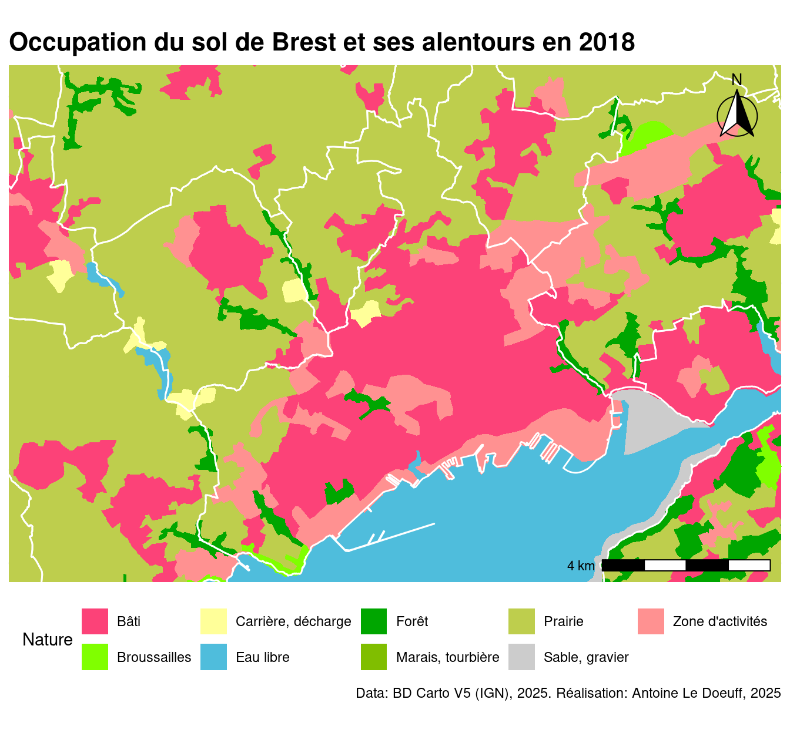
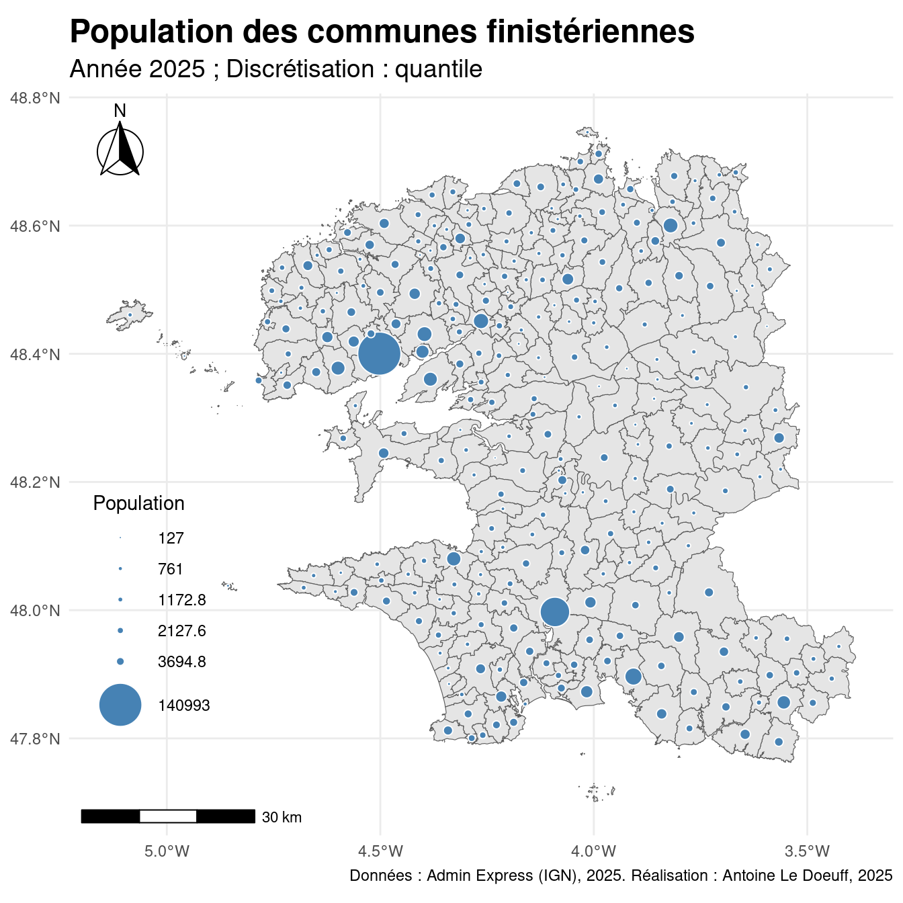

pacman::p_load(sf, rnaturalearth, ggplot2, rnaturalearthdata, dplyr)7 Cartographie
Des cartes sous R ? Pourquoi faire ?
Il peut être assez chronophage de créer une “belle carte” en utilisant R. Alors, pourquoi passer par là ? On peut voir plusieurs raisons :
- Des cartes de travail : les cartes conçues sont
Rpeuvent-être considérées comme des cartes de travail. Même si elle ne sont pas très belles, il n’en demeure pas moins qu’elles serviront à vos analyses ; les cartes basiques étant très rapides à réaliser. - Automatisation : avec
Ron peut très facilement générer beaucoup de cartes d’un coup (très pratique pour l’analyse). - Une base pour des cartes plus léchées : comme pour tous les outils de cartographie (QGIS, magrit, etc.), les cartes générées sous
Rpeuvent servir de matériel de base à une cartographie plus léchée sous un logiciel de DAO. C’est ce que je conseil de faire : carte basique sousR(ou QGIS), export en.eps(oupdf) et fignolage sur logiciel de DAO. Cela n’empêche que vous pouvez créer des cartes justes sousR(c.f. cartes ci-dessous) et c’est ce qui compte ; après tout, nous ne sommes pas graphiste.
Il existe de nombreux packages pour faire de la cartographie sous R. Chacun a sa propre façon de fonctionner.
Les packages généraux les plus utilisés sont :
Pour crééer des cartes spécifiques :
- Cartes intéractives :
leaflet,mapview - Cartes en contour de relief :
tanaka - Cartogrames :
cartogram,cartogramR. - Cartes en pic :
linemap - Rendu 3D :
rayshader - Cartes de flux :
mapsf+ttt. Attentiontttn’est plus maintenu… - Cartes bivariées :
biscale+ggplot2
On va se concentrer sur ggplot2 + sf car la syntaxe est la même que pour les graphiques avec ggplot2.
7.1 Cartographie avec ggplot2
geom_sf() est une fonction du package ggplot2 qui permet de représenter des objets spatiaux au format sf (simple features). Elle offre une intégration fluide entre les données géographiques et le système de visualisation de ggplot2, sans avoir besoin d’utiliser des outils externes.
n peut facilement afficher une carte simple à partir d’un jeu de données géographiques intégré comme rnaturalearth :
# Charger les données du monde
world <- ne_countries(scale = "medium", returnclass = "sf")
# Carte du monde
ggplot(data = world) +
geom_sf(fill = "lightblue", color = "white") +
labs(title = "Carte du monde avec geom_sf()") +
theme_minimal()
Ici, chaque polygone représente un pays. L’esthétique (fill, color) fonctionne comme pour les autres géométries de ggplot2.
7.1.1 Carto thématique
On charge les librairies et on télécharge les données.
Code
library(happign)
library(dplyr)
library(sf)
library(ggplot2)
library(ggspatial)
com_fin <- get_wfs(
x = NULL,
layer = "LIMITES_ADMINISTRATIVES_EXPRESS.LATEST:commune",
ecql_filter = "code_insee LIKE '29%'"
)
brest <- st_buffer(filter(com_fin, nom_officiel == "Brest"), 30e3)
ocsol <- get_wfs(brest, layer = "BDCARTO_V5:occupation_du_sol", spatial_filter = "bbox")7.1.1.1 Choroplète catégorielle
# Définition des couleurs
pal <- c(
"Prairie" = "#bece4d",
"Eau libre" = "#4fbddc",
"Sable, gravier" = "#cccccc",
"Bâti" = "#fc4278",
"Zone d'activités" = "#ff9191",
"Marais, tourbière" = "#80be00",
"Broussailles" = "#80ff00",
"Carrière, décharge" = "#ffff99",
"Forêt" = "#00a600"
)
ggplot() +
# Définition de la couche
geom_sf(data = ocsol, aes(fill = nature), color = NA) +
geom_sf(data = com_fin, color = "white", fill = NA, linewidth = .5) +
# Zoom sur Brest
coord_sf(xlim = c(-4.61669,-4.3900), ylim = c(48.36100, 48.46172), crs = 4326) +
labs(
title = "Occupation du sol de Brest et ses alentours en 2018",
fill = "Nature",
caption = "Data: BD Carto V5 (IGN), 2025. Réalisation: Antoine Le Doeuff, 2025"
) +
scale_fill_manual(values = pal) +
# Échelle
annotation_scale(location = "br") +
# Nord
annotation_north_arrow(
location = "tr", which_north = "true",
style = north_arrow_fancy_orienteering
) +
theme_minimal() +
theme(
legend.position = "bottom",
axis.text = element_blank(),
plot.title = element_text(size = 16, face = "bold"),
)
sf ne permet pas de créer des échelles et des orientations directement, il faut passer par ggspatial (annotation_north_arrow(), annotation_scale()).
7.1.1.2 Choroplète continue
com_fin <- get_wfs(
x = NULL,
layer = "LIMITES_ADMINISTRATIVES_EXPRESS.LATEST:commune",
ecql_filter = "code_insee LIKE '29%'"
)Features downloaded : 277com_fin <- mutate(com_fin,
area = as.numeric(st_area(geometry)),
dens = population / area * 1e6L
)ggplot() +
# Définition de la couche
geom_sf(data = com_fin, aes(fill = dens)) +
# Zoom sur Brest
labs(
title = "Densité de population communale en Finistère",
subtitle = "Année : 2025",
fill = "Densité (hab/km²)",
caption = "Data: Admin Express (IGN), 2025. Réalisation: Antoine Le Doeuff, 2025"
) +
scale_fill_continuous(palette = "Reds") +
# Échelle
annotation_scale(location = "bl") +
# Nord
annotation_north_arrow(
location = "tl", which_north = "true",
style = north_arrow_fancy_orienteering
) +
theme_minimal() +
theme(
legend.position = c(.1, .3),
plot.title = element_text(size = 16, face = "bold"),
plot.subtitle = element_text(size = 14),
)
7.1.1.3 Choroplète
Avec geom_sf(), on ne peut pas générer de discrétisation automatiquement. Il faut d’abord créer les classes avec la fonction classInt::classIntervals().
library(patchwork)
# Create differents discretisation
disc <- c("equal", "pretty", "quantile", "jenks")
d <- "pretty"
maps <- purrr::map(disc, \(d) {
com_fin[[paste0("disc_", d)]] <- cut(
com_fin$dens,
breaks = classInt::classIntervals(com_fin$dens, n = 5, style = d, dataPrecision=0)$brks,
include.lowest = TRUE, dig.lab = 4
)
ggplot(com_fin) +
# Définition de la couche
geom_sf(aes(fill = .data[[paste0("disc_", d)]])) +
labs(
title = paste("Discrétisation :", d),
fill = "Densité (hab/km²)"
) +
scale_fill_discrete(palette = "Reds") +
annotation_scale(location = "bl") +
annotation_north_arrow(
location = "tl", which_north = "true",
style = north_arrow_fancy_orienteering
) +
theme_minimal() +
theme(
legend.position = "right",
axis.text = element_blank()
)
})
wrap_plots(maps) +
plot_annotation(
title = "Densité de population en Finistère",
subtitle = "Année : 2025",
caption = "Data: Admin Express (IGN), 2025. Réalisation: Antoine Le Doeuff, 2025",
theme = theme(plot.title = element_text(size = 18, face = "bold"))
)
7.1.1.4 Cercles proportionnels
Pour faire des cartes en symbole proportionnels, il faut d’abord convertir les entités spatiales en points. On utilise ensuite geom_sf() avec l’argument size dans l’esthétique de la couche.
# Calcul du centroïde des communes
com_centro <- st_centroid(com_fin)Warning: st_centroid assumes attributes are constant over geometries# Discrétisation quantile
brks <- classInt::classIntervals(com_centro$population, n = 5, style = "quantile", dataPrecision=0)$brks
ggplot(com_centro) +
# Définition de la couche
geom_sf(data = com_fin) +
geom_sf(aes(size = population), color = "white", fill = "steelblue", shape = 21) +
# Zoom sur Brest
labs(
title = "Population des communes finistériennes",
subtitle = "Année 2025 ; Discrétisation : quantile",
size = "Population",
caption = "Données : Admin Express (IGN), 2025. Réalisation : Antoine Le Doeuff, 2025"
) +
scale_size_area(
max_size = 11,
breaks = brks,
labels = brks
) +
# Échelle
annotation_scale(location = "bl") +
# Nord
annotation_north_arrow(
location = "tl", which_north = "true",
style = north_arrow_fancy_orienteering
) +
theme_minimal() +
theme(
legend.position = c(.1, .3),
plot.title = element_text(size = 18, face = "bold"),
plot.subtitle = element_text(size = 14)
)
7.1.2 Les petits plus
7.1.2.1 Simplifier une géométrie
Une des règles en cartographie est d’utiliser un fond de carte dont la géométrie est adaptée à l’échelle utilisée. Si votre géométrie est trop détaillée, votre carte sera “surchargée”. Pour simlifier une géométrie, on peut utiliser sf::st_simplify(). Cependant, cette derières ne permet pas une simplification cohérente des géométries de type multipolygon. Aussi, pour ce type de géométrie, on utilisera la fonction ms_simplify() du package rmapshaper1.
1 mapshaper utilise la simplification de Visvalingam. Il existe une application en ligne qui permet de réaliser cette simplication de manière intéractives.
library(purrr)
# Vecteur de valeur de simplification
keeps <- c(0.01, 0.001, 0.0001)
fin_simps <- map(keeps, ~rmapshaper::ms_simplify(com_fin, keep = .x))
fins <- c(list(com_fin), fin_simps) |> set_names(c("0", keeps))
maps <- purrr::imap(fins, \(f, n_simp) {
ggplot(f) +
geom_sf() +
labs(title = paste("simp =", n_simp)) +
theme_minimal()
})
wrap_plots(maps) +
plot_annotation(
title = "Simplication de la géométrie des communes finistériennes",
caption = "Données : Admin Express (IGN), 2025. Réalisation : Antoine Le Doeuff, 2025",
theme = theme(plot.title = element_text(size = 15, face = "bold"))
)
7.1.2.2 Fond de cartes open source
Tout sous QGIS, vous pouvez charger des fonds de cartes open-source. Pour cela, vous pouvez par exemple, utiliser le package basemapR.
library(basemapR)
tsport <- get_wfs(
x = filter(com_fin, nom_officiel == "Pont-l'Abbé"),
layer = "BDTOPO_V3:terrain_de_sport",
spatial_filter = "within"
)Features downloaded : 16ggplot() +
basemapR::base_map(st_bbox(tsport), increase_zoom = 2, basemap = "positron") +
geom_sf(data = tsport, fill = "red") +
labs(
title = "Terrain de sport à Pont-l'Abbé (29) en 2025",
caption = "Données : BTOPO (IGN), 2025 ; CartoDB & OpenStreetMap, 2025. Réalisation: Antoine Le Doeuff"
) +
annotation_scale(location = "bl") +
annotation_north_arrow(
location = "tl", which_north = "true",
style = north_arrow_fancy_orienteering
) +
theme_minimal() +
theme(axis.text = element_blank())
Méfiez-vous de ces types de fond de carte. Ils peuvent considérablement alourdir vos cartes avec des informations superflues.